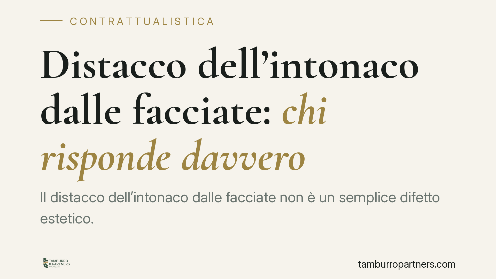

Distacco dell'intonaco dalle facciate: chi risponde davvero
Il distacco dell'intonaco dalle facciate non è un semplice difetto estetico. Quando compromette la stabilità o la funzionalità dell'edificio, rientra tra i gravi difetti dell'opera, con responsabilità che può investire sia l'impresa sia il direttore dei lavori. Chiarire chi risponde, e chi può essere citato in giudizio, è decisivo per impostare correttamente ogni azione di risarcimento.

Il problema: un difetto che va oltre l'estetica
Un intonaco che si stacca dalle facciate può sembrare, a prima vista, una questione di decoro. Non è così. Quando il distacco è diffuso, ricorrente o tale da mettere a rischio l'incolumità di chi transita sotto l'edificio, si entra nel campo dei gravi difetti dell'opera.
La distinzione conta, perché cambia completamente il regime di responsabilità applicabile, i termini per agire e i soggetti che possono essere chiamati a rispondere.
Inquadramento normativo
Il riferimento centrale è l'art. 1669 cod. civ., che disciplina la responsabilità dell'appaltatore per rovina e gravi difetti dell'opera destinata a lunga durata. La norma si applica quando, entro dieci anni dal compimento, l'opera presenta vizi che incidono su elementi essenziali di struttura, funzionalità o durata.
La giurisprudenza di legittimità include da tempo nel perimetro dell'art. 1669 c.c. anche i distacchi di intonaco che non riguardano la stabilità portante ma compromettono la normale utilizzazione o la conservazione del fabbricato. Si tratta di una responsabilità di natura extracontrattuale, soggetta a termini specifici: denuncia entro un anno dalla scoperta, azione entro un anno dalla denuncia.
Quando il difetto è meno grave e resta nell'ambito contrattuale, tornano invece applicabili gli artt. 1667 e 1668 cod. civ., con i più stretti termini di decadenza (sessanta giorni dalla scoperta) e prescrizione (due anni dalla consegna).
Un ruolo autonomo spetta al direttore dei lavori. Il suo obbligo di vigilanza, richiamato anche dall'art. 29 D.P.R. 380/2001, lo espone a responsabilità propria quando il difetto deriva da una carente sorveglianza sulla corretta esecuzione. In questi casi opera l'art. 2055 cod. civ.: impresa e direttore dei lavori rispondono in solido verso il danneggiato.
Implicazioni pratiche
Per il committente, o per il condominio proprietario dell'edificio, la solidarietà è un vantaggio processuale non trascurabile. Significa poter chiedere l'intero risarcimento a uno qualsiasi dei corresponsabili, salvo poi il regresso tra loro per le rispettive quote.
La scelta del soggetto da citare non è però indifferente. L'azione ex art. 1669 c.c. nei confronti dell'appaltatore richiede di provare la gravità del difetto e il rispetto dei termini di denuncia. L'azione verso il direttore dei lavori richiede invece di dimostrare l'omessa o insufficiente vigilanza, con un onere probatorio diverso.
Nel contesto condominiale, la legittimazione ad agire spetta di regola all'amministratore per le parti comuni, previa delibera assembleare. Il singolo condomino può agire autonomamente solo per il danno subito dalla propria unità immobiliare.
Attenzione alla decorrenza dei termini. La "scoperta" rilevante non coincide con la prima comparsa di una lesione, ma con il momento in cui si acquisisce consapevolezza della gravità e dell'origine del difetto, spesso solo dopo un accertamento tecnico. Anticipare o ritardare la denuncia può compromettere l'azione.
Cosa fare in concreto
- Documentate subito lo stato dei luoghi. Fotografie datate, rilievi e, dove possibile, una perizia tecnica che qualifichi la gravità del distacco e ne individui la causa.
- Verificate i termini. Individuate la data di compimento dell'opera e di scoperta del difetto, per stabilire se si rientra nei dieci anni dell'art. 1669 c.c. e rispettare il termine annuale di denuncia.
- Inviate una denuncia formale all'appaltatore e, quando configurabile una sua responsabilità, al direttore dei lavori, con raccomandata o PEC, descrivendo il difetto e riservando ogni azione.
- In ambito condominiale, convocate l'assemblea per deliberare l'azione e conferire mandato all'amministratore, evitando vizi di legittimazione.
- Valutate un accertamento tecnico preventivo ex art. 696-bis c.p.c., utile a cristallizzare le prove e a favorire una definizione conciliativa prima della causa di merito.
La corretta qualificazione del difetto e la scelta tempestiva del soggetto da citare restano i due snodi decisivi. Consigliamo di affrontarli con un'analisi preliminare della documentazione contrattuale e tecnica, prima di qualsiasi iniziativa giudiziale.
---
Contributo informativo a cura di Tamburro & Partners - Avv. Giuseppe Tamburro. Non costituisce parere legale.
Ogni contratto ha il suo equilibrio.
Se vuoi una revisione delle clausole o una redazione su misura, scrivi allo studio. Ti rispondiamo entro un giorno lavorativo.